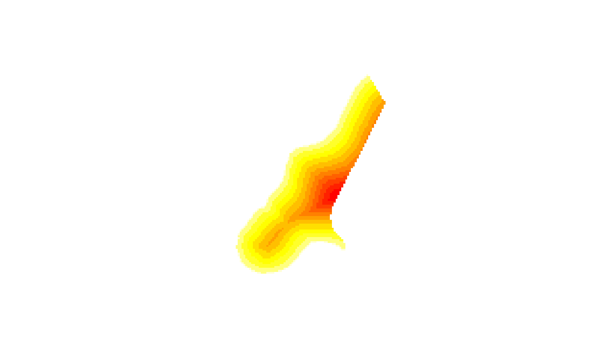
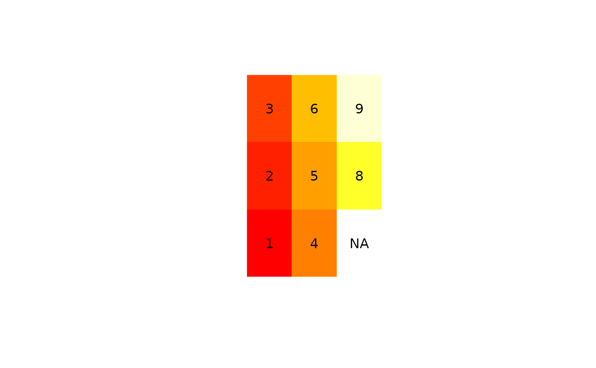

SpatialPixelsDataFrame-class.RdClass for spatial attributes that have spatial locations on a regular grid.
Objects can be created by calls of the form as(x,
"SpatialPixelsDataFrame"), where x is of class
SpatialPointsDataFrame-class, or by importing through rgdal.
Ordered full grids are stored instead or unordered non-NA cells;
bbox:Object of class "matrix"; bounding box
proj4string:Object of class "CRS"; projection
coords:see SpatialPoints; points slot
coords.nrsgrid:see GridTopology-class; grid parameters
grid.index:integer; index of points in the list to points in the full (ordered) grid. x cycles fastest; all coordinates increase from low to hight except y, which decreases from high to low
data:Object of class data.frame, containing the attribute data
Class "SpatialPixels", directly.
Class "Spatial", by class "SpatialPixels".
signature(x = "SpatialPixelsDataFrame"): retrieves coordinates
signature(x = "SpatialPixelsDataFrame"): selects row(s) and/or attribute(s), and returns an
object of class SpatialPixelsDataFrame; rows refer here to the pixel
numbers, not grid lines. For selecting a square block in a grid, coerce to
a SpatialGridDataFrame-class first, and use [ on that object
signature(x = "SpatialPixelsDataFrame"): coerce to matrix
signature(x = "SpatialPixelsDataFrame"): rbind-like method
signature(x = "SpatialPixelsDataFrame", y = "missing"): see
SpatialGridDataFrame-class for details
SpatialPixels-class, which does not contain the attribute data
data(meuse.grid) # only the non-missing valued cells
coordinates(meuse.grid) = c("x", "y") # promote to SpatialPointsDataFrame
gridded(meuse.grid) <- TRUE # promote to SpatialPixelsDataFrame
meuse.grid[["idist"]] = 1 - meuse.grid[["dist"]] # assigns new attribute
image(meuse.grid["idist"]) # note the single [

# toy example:
df = data.frame(z = c(1:6,NA,8,9),
xc = c(1,1,1,2,2,2,3,3,3),
yc = c(rep(c(0, 1.5, 3),3)))
coordinates(df) = ~xc+yc
gridded(df) = TRUE
image(df["z"])
# draw labels to verify:
cc = coordinates(df)
z=df[["z"]]
zc=as.character(z)
zc[is.na(zc)]="NA"
text(cc[,1],cc[,2],zc)
